A non-profit organisation that supports young people through creative computing, digital art, and technology. As Social Media Coordinator, I created graphics, social media campaigns, newsletters, event promotions, and data visualisations to communicate the organisation's work and increase community engagement.
Role: Graphic Design • Data Visualisation • Social Media Campaign
Goal: To communicate Peckham Digital's annual impact through an engaging visual campaign inspired by Spotify Wrapped, making participation data more accessible and shareable for young people, partners, and funders.
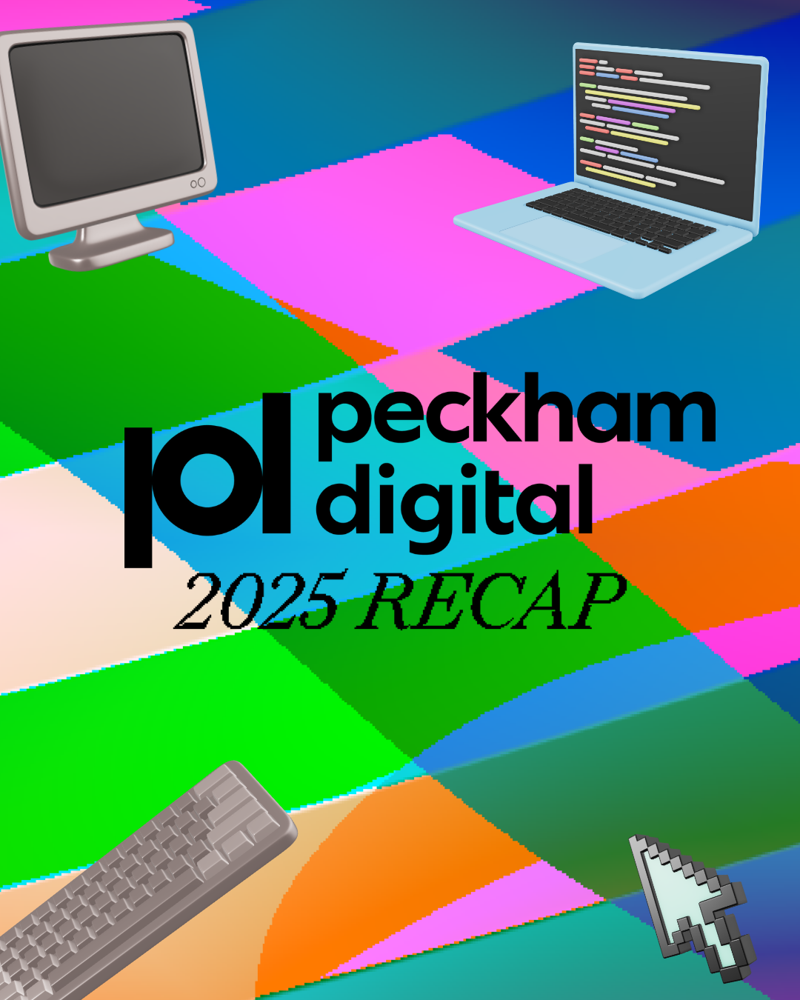
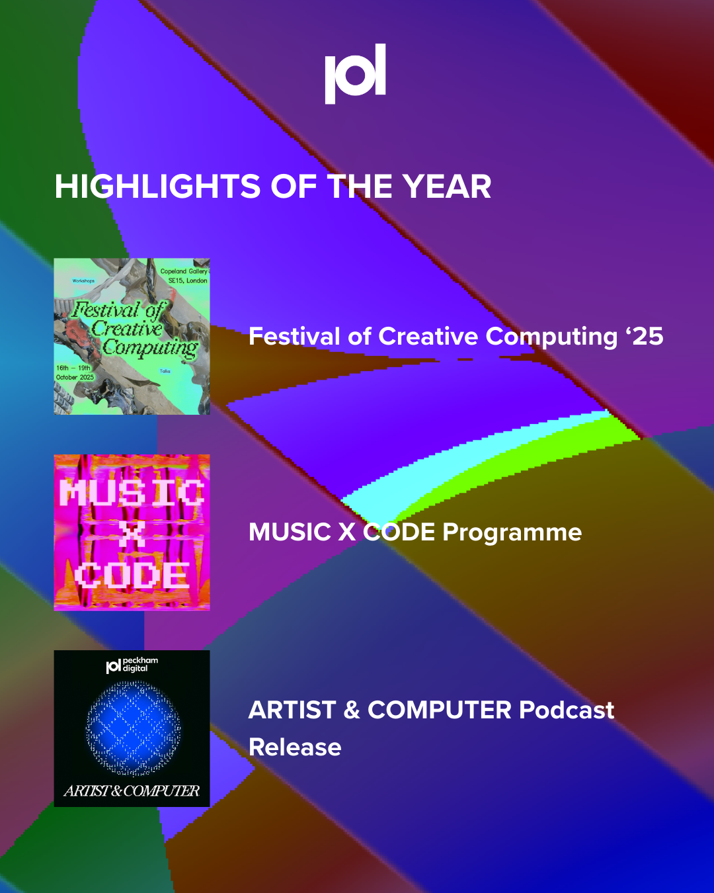
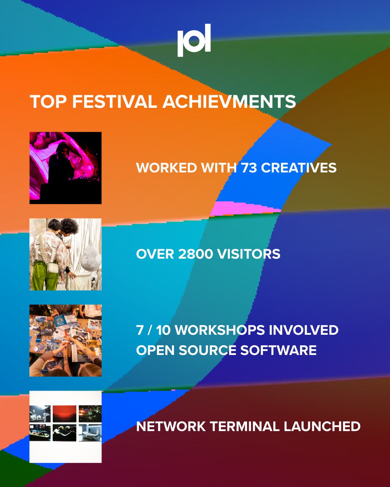
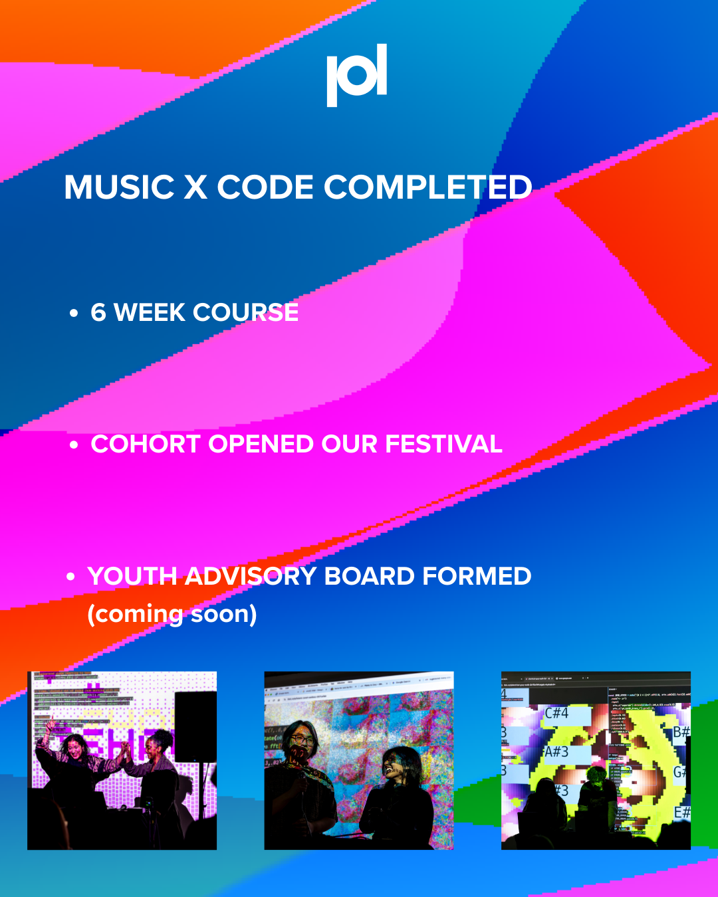
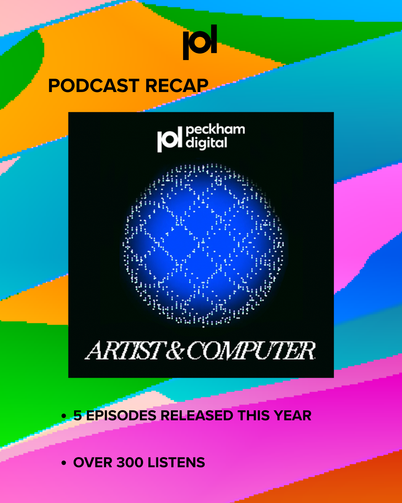
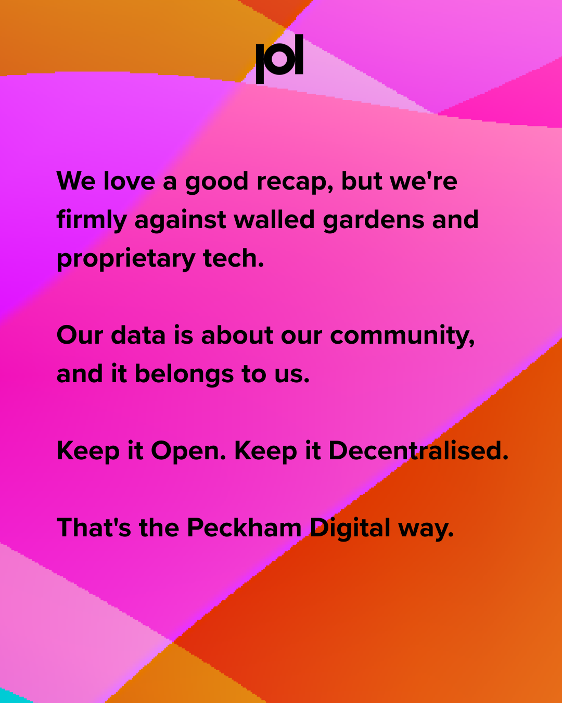
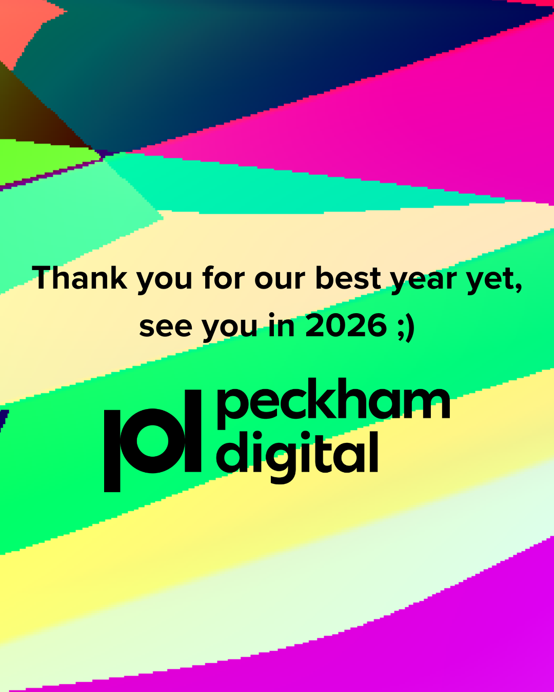
Role: Graphic Design • Community Engagement
Goal: The goal was to announce the members of the Peckham Digital Youth Board by creating eye-catching social media graphics. The campaign also announced the members of the newly formed youth board, which aims to shape the future of Peckham Digital. The board is focused on accessibility and youth-led decision-making, with a particular emphasis on supporting young and marginalised people to engage with creative computing.
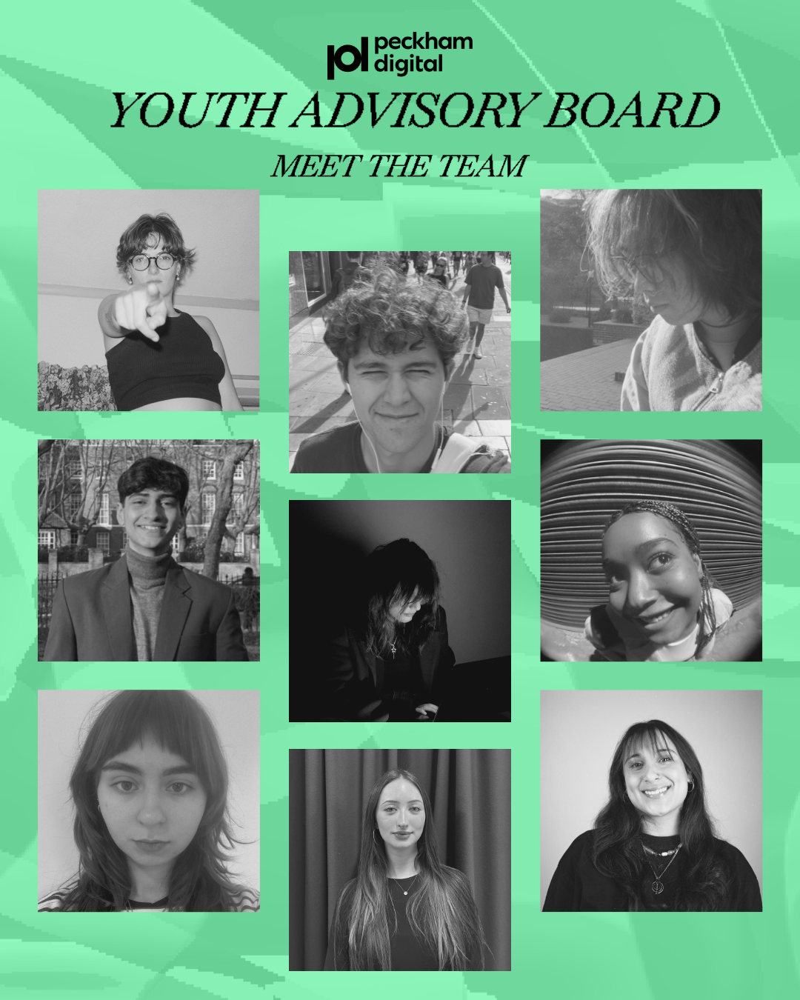
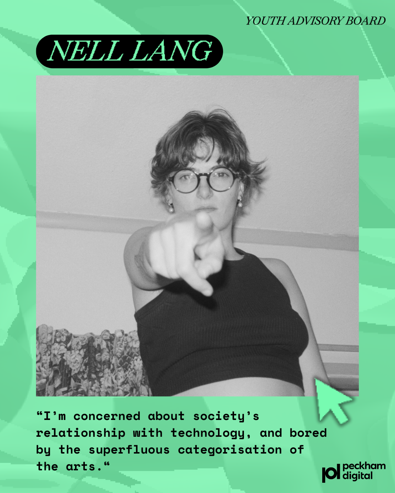
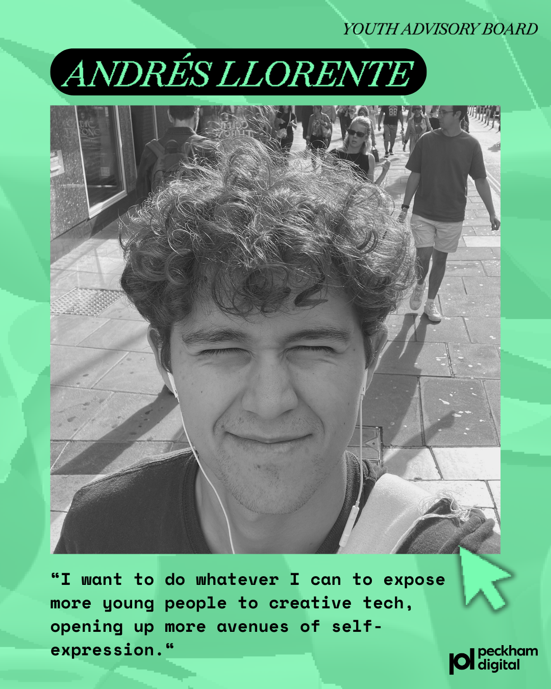
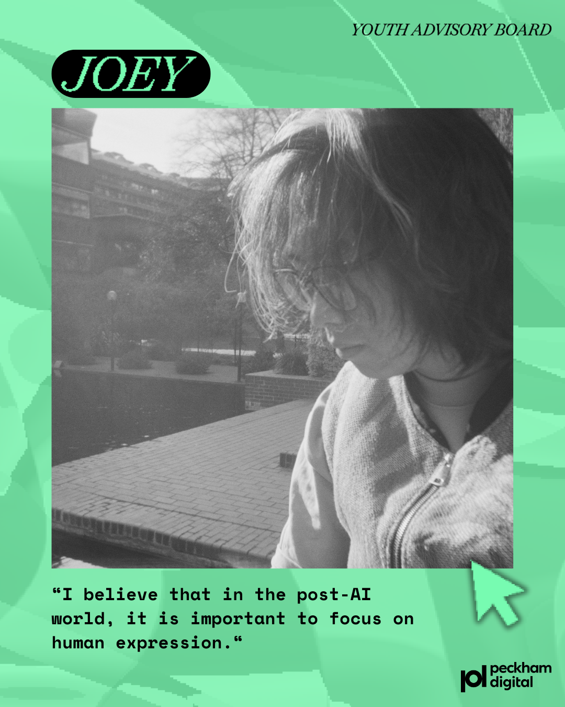
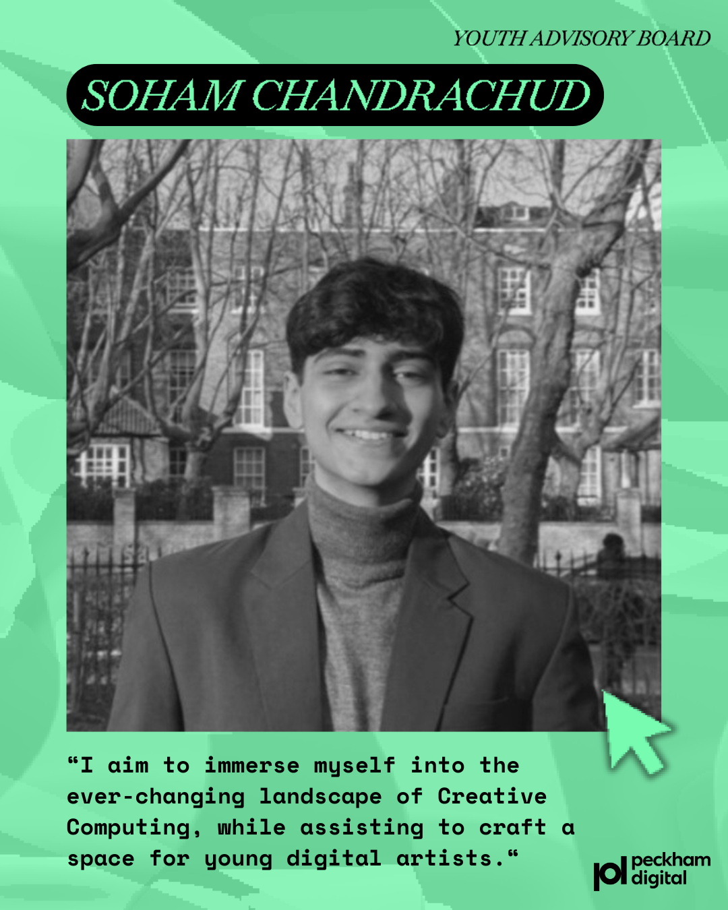
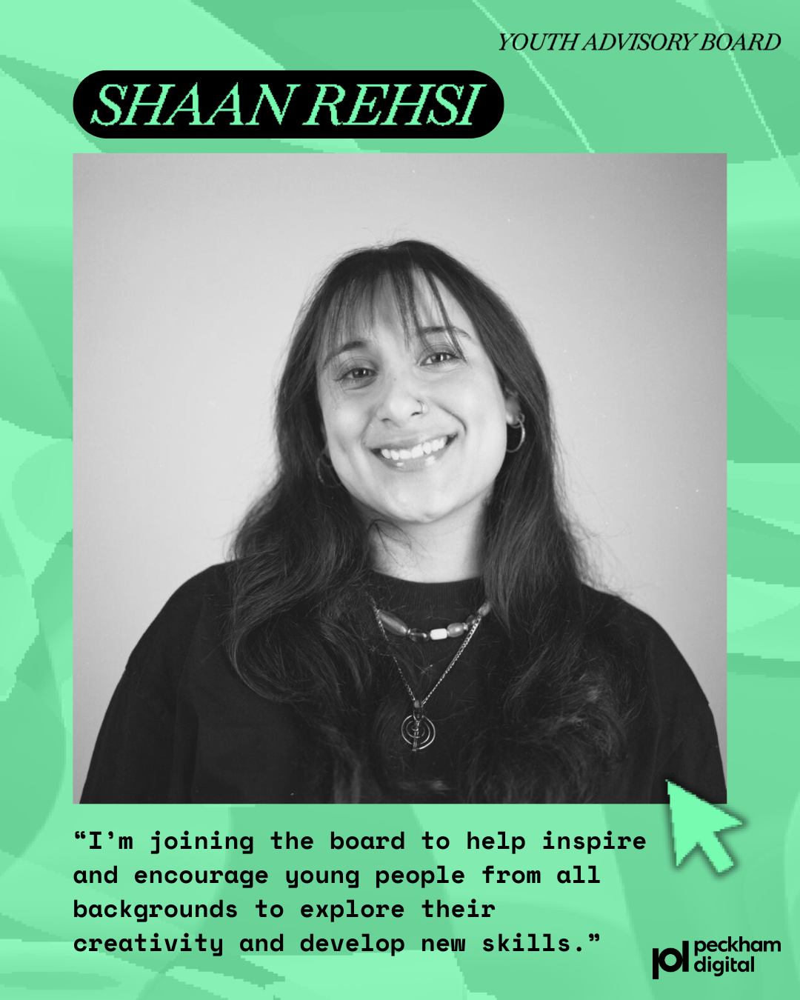
During the Peckham Digital Creative Computing Festival, I worked as part of the media and documentation team. I interviewed participating artists, captured live footage across events, and documented talks, workshops, and installations in real time.
I also created and scheduled social media posts throughout the festival to keep the Instagram active and responsive to ongoing activity. Using AI-assisted tools, I helped streamline content production and maintain a consistent posting flow during a fast-paced live environment.
This approach helped sustain audience engagement, and the Instagram account grew from around 2,500 followers to nearly 4,000 over the festival period.
Young People Engaged
Workshops Delivered
Community Partners
Years Supporting Young People
© 2026 Shaan K Rehsi
Social Campaigns
A selection of Instagram posts, reels, and campaign graphics designed for Peckham Digital. These outputs include awareness campaigns, event promotion, and community engagement content, developed to strengthen participation and visibility across the organisation’s programmes, alongside written captions crafted to encourage user engagement and interaction.
Examples include high-performing posts such as “Who Are We” and “Come to our Algorave,” where visual storytelling, platform-aware design, and captions were used to increase engagement.